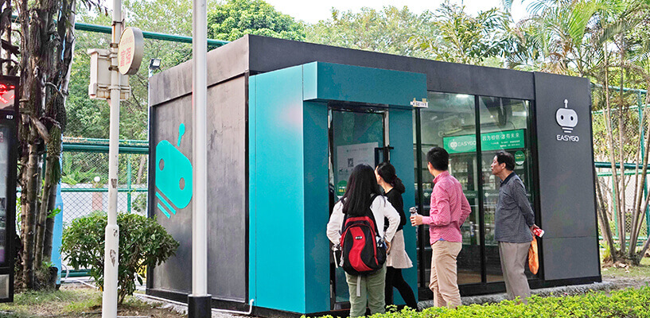

无人零售概念火热 巨头、初创品牌竞相抢夺
继Amazon Go “即拿即走，免排队”的超前购物体验广受零售业界瞩目后，阿里巴巴、 深兰科技、缤果盒子等多家国内企业也纷纷开始布局。
随着线上增长放缓、获客成本渐高，线下流量开始重回大众视野， “线下”成了下一个互联网获取用户的必争之地。
入局者技术存差距
目前运用在无人便利店的几种技术模式中，“无人”概念在实际操作上有所不同。粗略可分为“如何识别进店消费者是谁”和“如何识别消费者所购买的商品”两大技术问题，无人便利店对这两个问题的解决方案，直接影响零售过程的防盗性与用户体验。
东吴证券的一份研究报告显示，当前无人零售在技术上大致可分为三种路线：一是以 Amazon Go、阿里淘咖啡、Take Go 为代表的人工智能流派，主要采用机器视觉、深度学习算法、传感器融合技术、卷积神经网络、生物识别等技术;二是以缤果盒子、罗森日本无人店为代表的物联网流派， 主要采用 RFID 标签技术;三是以便利蜂、小 e 微店为代表的互联网流派， 主要利用二维码来完成对货物的识别。

事实上，人工智能技术综合运用起来成本颇高，技术考量的背后，关于无人零售是否真正能节约成本，一直存在争议之处。
近日，记者走访了位于广州一线商圈的一间无人便利店EasyGo，店门上醒目地标明“请扫码开门”。记者在现场留意到店内商品不多，主要以进口零食和日用品为主，每一件商品上都贴有一张“未来便利店”小程序码的RFID标签。
EasyGo 未来便利店的联合创始人王牧牧告诉记者，该便利店是首家广州本土研发的无人便利店，是第一家也是目前惟一将店门设计成结算区域(即支付门)的无人便利店。每个EasyGo便利店的sku都能达到500+，提供标准化商品，目前主要集中为进口商品，熟食和热加工的商品暂时不在范围之内。商品通过RFID标签进行识别，顾客携带商品，在店门位置站立数秒，通过微信小程序就可以无感支付，做到拿完即走。
在王牧牧看来，与传统便利店相比，EasyGo“不是颠覆，而是一种升级和进化”。
成本和效率之争
当前无人便利店业态尚处于探索阶段，业界对于探索路线和运营模式都存在不同看法。易观近日发布的《中国无人便利店发展专题分析2017》指出，在早期运营中，由于技术不确定性导致的针对货损、货缺风险防范乏力，为商铺带来运营风险。
关于无人便利店的成本核算，中百集团总经理万明治曾撰文分析，无人零售盒子平均每个平方投资6000-10000元，相比夫妻老婆店每平方投资800-1000元，普通便利店每平方平均投资2000元。“目前来说我无法在投资、成本、和销售产出这几个方面无法找到无人便利店的突破点。”
王牧牧告诉记者，传统便利店每个月有固定支出，一家60平方米的传统便利店每月支出3万元左右租金，同时雇佣4名员工，按平均月薪4000元计算，每月人工成本约1.6-2万元。在不计算加盟费、店铺转让费和装修费用的情况下，传统便利店每日流水须达到8000元，才能实现盈亏平衡。
在EasyGo的模式里，整个流程实现无人收银，人工成本非常轻。同时不需要店铺租金，因为所在位置都是小区里面，不需要固定铺位，是一个完成的盒子。通过和小区物业深度合作，双方一同维护设备，并实行利润分成(物业方将得到销售额的5%-8%)。
记者从EasyGo团队处了解，单个盒子的造价在8-10万元。单个盒子的占地面积约为10-15平方米，里面会有便利店配合的商品货柜，安装摄像头，门口处安装识别设备，并设计紧急按钮，提供客服服务。
在创始团队的计算中，EasyGo单店每月营收约在6-8万元左右，利润30%-40%。店内商品的供货和补货，均由供应商完成。供应商通过EasyGo的后台大数据，能掌握具体的货物销售信息，及时和统一配送、补充货品。未来，预计每30-50家门店只需3-5名管理人员即可维护。同时，EasyGo便利店也将通过后台大数据分析哪些商品更受欢迎，从而调整sku和货架摆放。